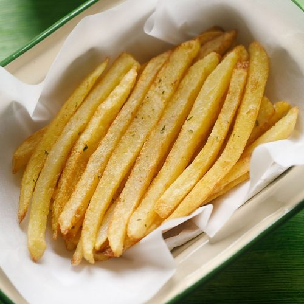
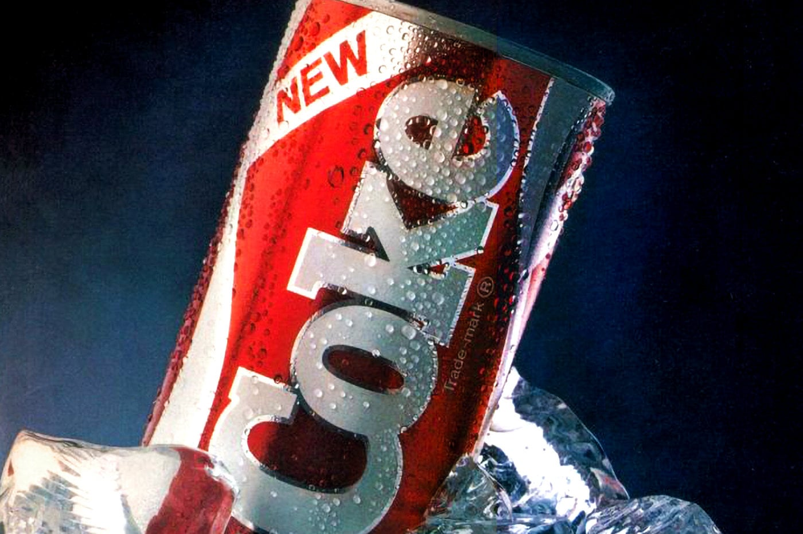
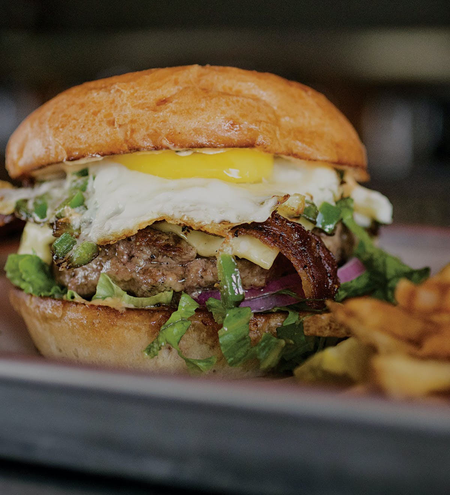
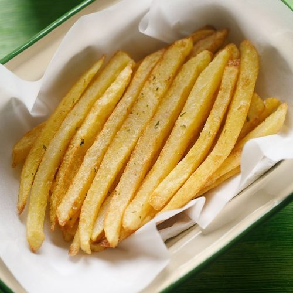
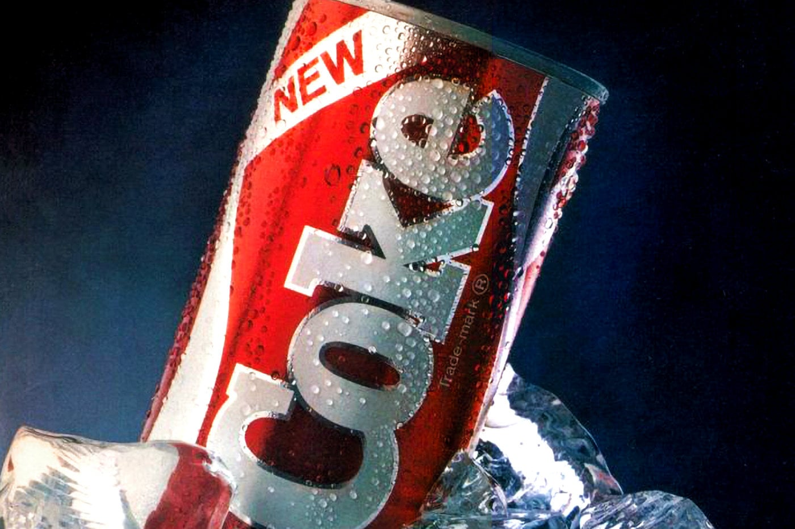
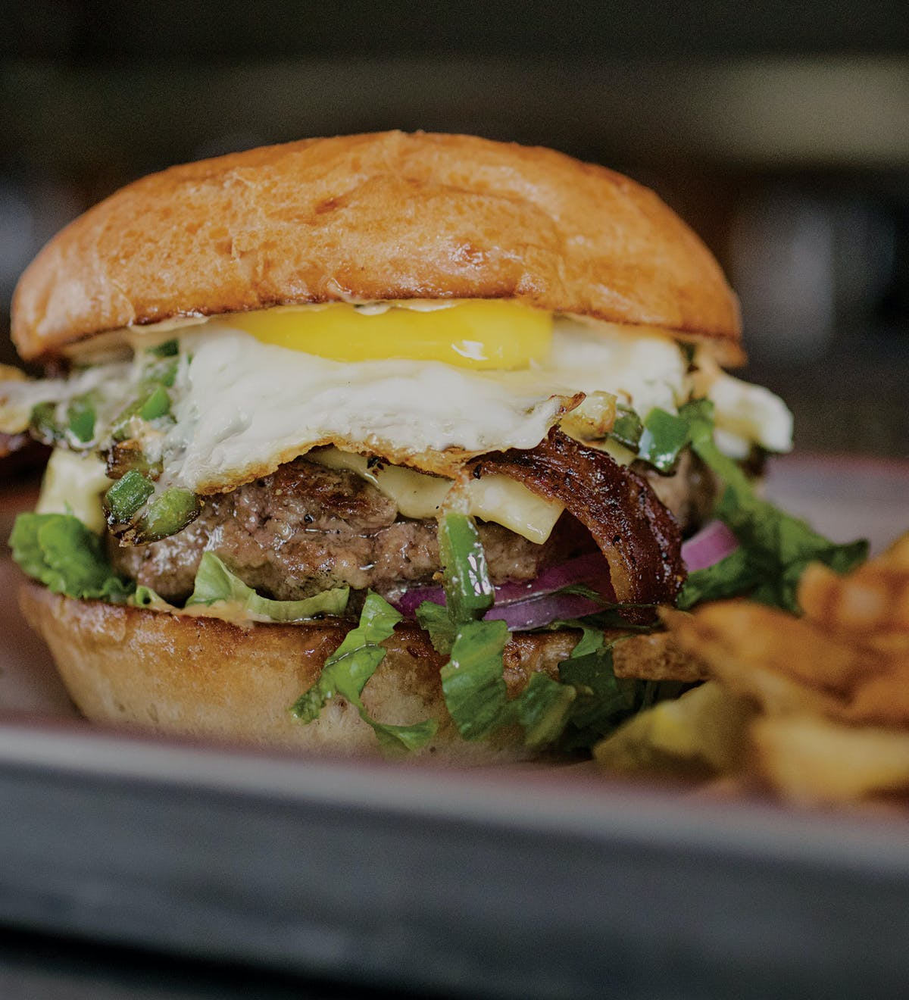

Burger Mania
Burger King (BK) is an American multinational chain of hamburger fast food restaurants. Headquartered in the unincorporated area of Miami-Dade County, Florida, the company was founded in 1953 as Insta-Burger King, a Jacksonville, Florida–based restaurant chain. After Insta-Burger King ran into financial difficulties in 1954, its two Miami-based franchisees David Edgerton and James McLamore purchased the company and renamed it "Burger King". Over the next half-century, the company changed hands four times, with its third set of owners, a partnership of TPG Capital, Bain Capital, and Goldman Sachs Capital Partners, taking it public in 2002. In late-2010, 3G Capital of Brazil acquired a majority stake in the company, in a deal valued at US$3.26 billion. The new owners promptly initiated a restructuring of the company to reverse its fortunes.
The 1970s were the "Golden Age" of the company's advertising, but beginning in the early-1980s Burger King advertising began losing focus. A series of less successful advertising campaigns created by a procession of advertising agencies continued for the next two decades